Overview
In this (very long) project, I implemented core path tracing algorithms for a physically-based renderer! This involved generating camera rays and pixel samples,
calculating intersections with triangles and spheres, constructing a bounding volume hierarchy (BVH) tree with axis-aligned boxes for acceleration, implementing the diffuse bidirectional scattering distribution function (BSDF),
computing direct zero-bounce, one-bounce illumination (both uniform hemisphere sampling and importance sampling lights), and global illumination (including Russian roulette random bounce termination),
and applying adaptive sampling for dynamic sample concentration and noise elimination. This was a difficult but rewarding project, and I enjoyed rendering cool images :)
Part 1: Ray Generation and Scene Intersection (20 Points)
Walk through the ray generation and primitive intersection parts of the rendering pipeline.
The rendering pipeline first generates a ray originating from the camera corresponding to a given pixel position on the sensor plane.
It computes the position of the input sample coordinate on the canonical sensor plane, which is one unit away from the pinhole,
calculating the coordinates of the bottom-left and top-right corners based on the horizontal and vertical field of view (hFov and vFov).
It then linearly interpolates between these corners based on the given coordinates (x, y) to determine the position in camera space.
The position is transformed to world space using the camera-to-world matrix c2w and normalized to obtain the ray direction.
The min_t and max_t values of the ray are set to nClip and fClip, respectively, which represent the near and far clipping distances.
The next step is to generate pixel samples to estimate the integral of radiance over pixels, averaging ns_aa samples.
If the number of samples is 1, then it simply takes the center of the pixel as the coordinate. Otherwise, it samples uniformly over a unit square using gridSampler.
Rays are generated using the averaged sampled coordinates normalized by the width and height of sampleBuffer.
This project involved implementing ray intersections with two types of primitives: triangles and spheres.
For both types, when an intersection with a ray is detected, the isect structure is populated with the t-value of the input ray,
the surface normal at the intersection, the primitive that was intersected, and the BSDF (surface material representation for reflecting and transmitting light) at the hit point.
Ray-sphere intersection is computed by substituting the ray equation into the sphere equation and solving the quadratic equation for t.
Explain the triangle intersection algorithm you implemented in your own words.
Ray-triangle intersections is implemented by first solving the ray-plane intersection equation for the plane the triangle lies on.
It then computes the barycentric coordinates of the intersection point, which represent its position relative to the triangle's vertices.
It verifies whether these coordinates fall within the triangle's boundaries (if all coordinates are between 0 and 1 after normalization).
It also ensures the intersection point lies within the valid range of possible intersection times along the ray, determined by r.min_t and r.max_t.
Show images with normal shading for a few small .dae files.
|
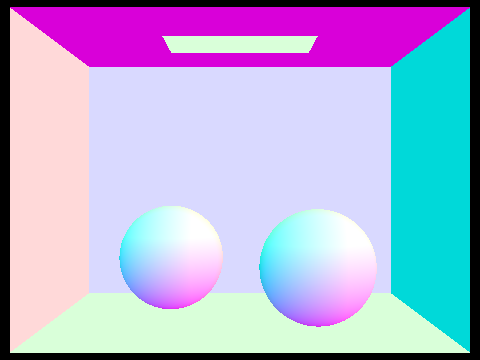
sky/CBspheres.dae
|
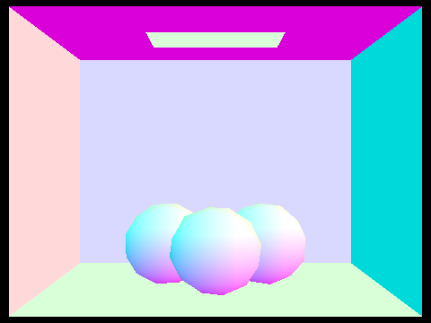
sky/CBgems.dae
|
|
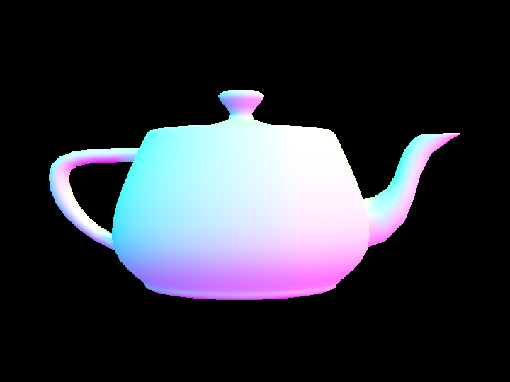
meshedit/teapot.dae
|
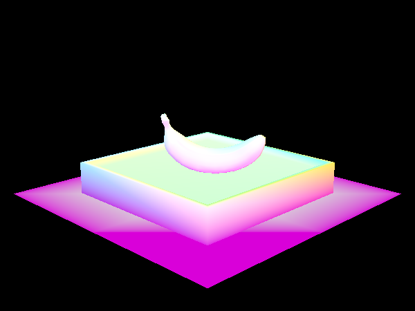
keenan/banana.dae
|
Part 2: Bounding Volume Hierarchy (20 Points)
Walk through your BVH construction algorithm. Explain the heuristic you chose for picking the splitting point.
The algorithm constructs a BVH by partitioning a set of primitives into two smaller groups and recursively constructing child BVH nodes.
It starts by computing the encompassing bounding box for all the node's primitives and the average centroid of these bounding boxes.
If the number of primitives is below the max_leaf_size threshold, it creates a leaf node, setting the appropriate start and end iterators.
Otherwise, it splits the primitives into left and right groups based on the average centroid position heuristic, choosing the split axis with the maximum extent.
The splitting point is the x, y, or z coordinate of the average centroid, and each primitive's bounding box's corresponding centroid coordinate is compared.
If either child node would have an empty set of primitives, one of the other child's primitives is transferred to prevent infinite recursion.
The left and right child pointers of the parent are set to the sub-BVHs, repeating until all primitives are organized into the hierarchical tree structure.
Show images with normal shading for a few large .dae files that you can only render with BVH acceleration.
|
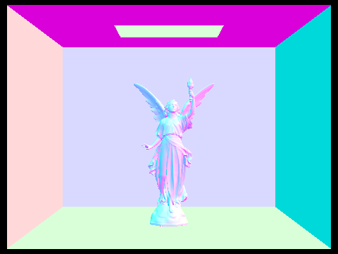
sky/CBlucy.dae
|
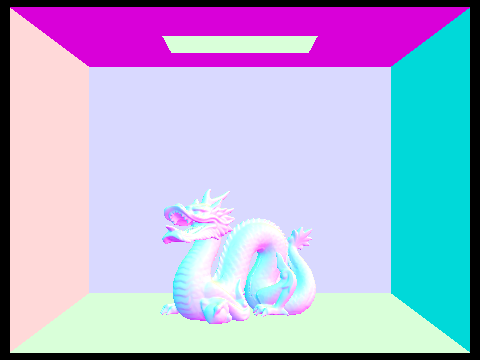
sky/CBdragon.dae
|
|
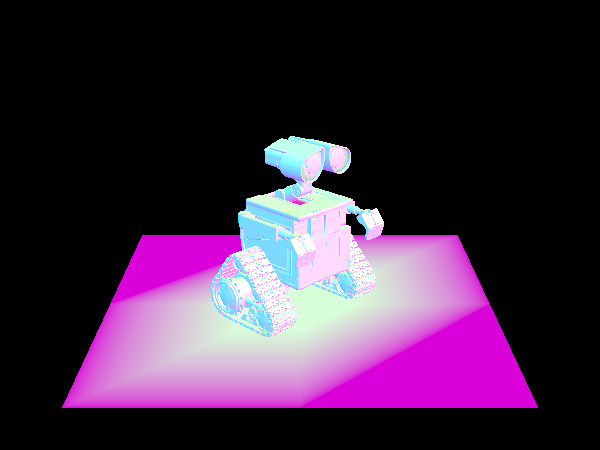
sky/wall-e.dae
|
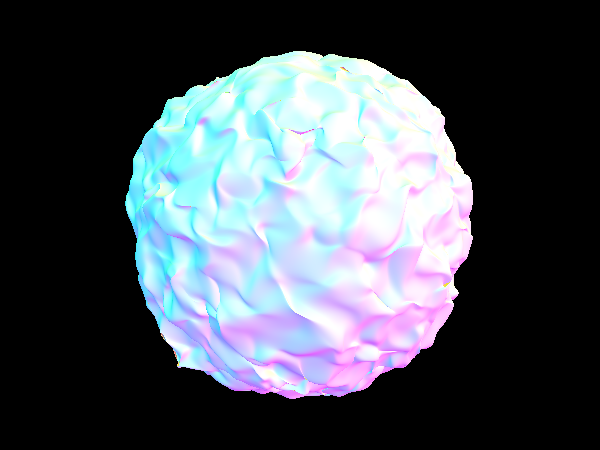
sky/blob.dae
|
 sky/maxplanck.dae
sky/maxplanck.dae
|
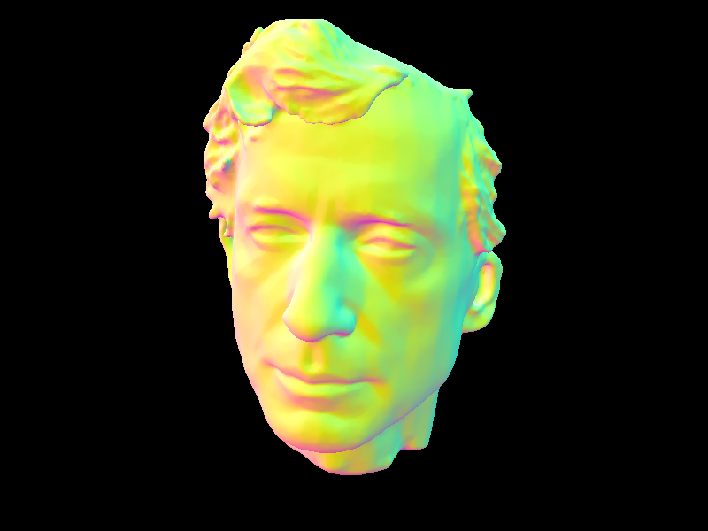
sky/peter.dae
|
Compare rendering times on a few scenes with moderately complex geometries with and without BVH acceleration. Present your results in a one-paragraph analysis.
|
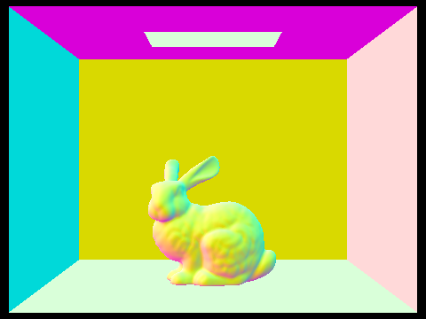
sky/CBbunny.dae
|
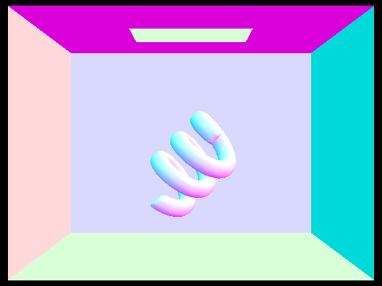
sky/CBcoil.dae
|
 meshedit/cow.dae
meshedit/cow.dae
|
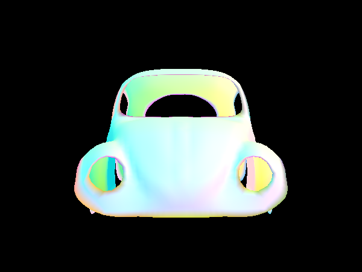
meshedit/beetle.dae
|
|
COLLADA File
|
Naive Rendering
|
BVH Acceleration
|
Speedup
|
| CBbunny.dae |
50.8027s |
0.0406s |
1251x |
| CBcoil.dae |
15.0733s |
0.0424s |
356x |
| cow.dae |
30.8522s |
0.0590s |
523x |
| beetle.dae |
14.4169s |
0.0281s |
513x |
BVH acceleration dramatically reduces rendering times, taking ray intersection complexity from O(n) to O(log(n)).
As shown in the table above, the speedup in my timing experiments were in the hundreds to thousands range.
With the bounding volume hierarchy tree structure, even complex geometries like sky/wall-e.dae and sky/CBlucy.dae can be rendered in less than one second.
The effects of the speedup are more distinct when the input file is larger, as the smallest files still rendered in acceptable time with the naive solution.
Part 3: Direct Illumination (20 Points)
Walk through both implementations of the direct lighting function.
Direct lighting consists of rendering zero-bounce and one-bounce radiance, with two methods for the latter.
Uniform hemisphere sampling implements direct lighting by tracing inverse rays and computing reflected light, using the incoming rays integrated over all the light in a hemisphere.
It creates a local coordinate system with the surface normal pointing in the positive z-direction and evenly generates random samples using the given hemisphereSampler.
A ray is constructed originating from the intersection point with the sampled direction, which is transformed to world space using the object-to-world matrix o2w.
If an intersection is found, it calculates the outgoing light with the reflection equation, multiplying the emission from the intersected surface with the BSDF for the current surface and incident direction.
The accumulated light is normalized by the probability of taking each sample (a hemisphere has 2π steradians) and divided by the total number of samples to return the average.
Importance sampling lights has the same goal as uniform hemisphere sampling, but samples the lights directly to reduce noise and enable rendering point light sources.
It sets up the local coordinate system and ray for the hit point in the same manner, then iterates over the lights in the scene to estimate each light's contribution.
If the light is a delta light with no surface area, only 1 sample is taken. Otherwise, it averages ns_area_light samples.
Each sample retrieves the incident direction (converted to the object space with the world-to-object matrix w2o), distance to the light, and probability density function value.
If the light is in front of the surface and a "shadow" ray cast from the hit point does not intersect any other object in front of the light, the radiance is normalized by the pdf and added to the lighting estimate.
Show some images rendered with both implementations of the direct lighting function.
|
Uniform Hemisphere Sampling
|
Light Sampling
|
|
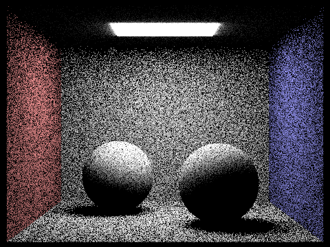
CBspheres: s=64, l=1
|
CBspheres: s=64, l=1
|
|
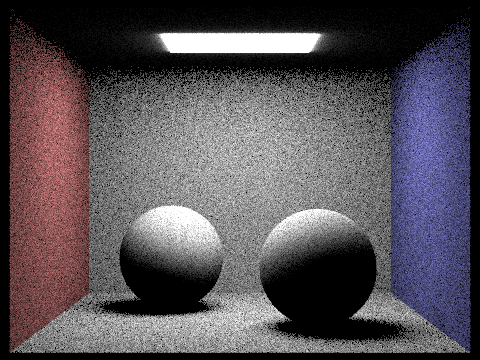
CBspheres: s=64, l=4
|
CBspheres: s=64, l=4
|
|
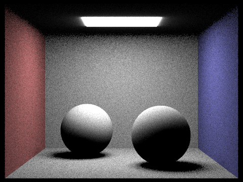
CBspheres: s=64, l=16
|
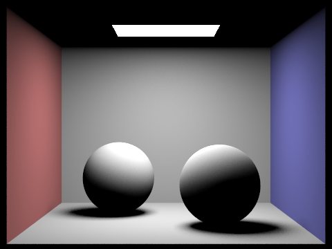
CBspheres: s=64, l=16
|
|
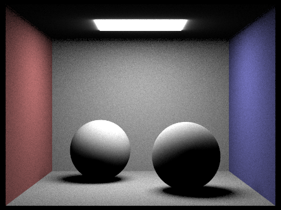
CBspheres: s=64, l=64
|
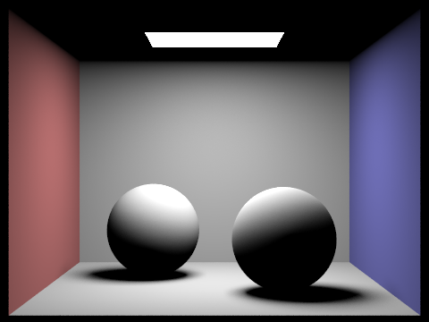
CBspheres: s=64, l=64
|
Focus on one particular scene with at least one area light and compare the noise levels in soft shadows when rendering with
1, 4, 16, and 64 light rays (the -l flag) and with 1 sample per pixel (the -s flag) using light sampling, not uniform hemisphere sampling.
|
CBbunny: s=1, l=1
|
CBbunny: s=1, l=4
|
|
CBbunny: s=1, l=16
|
CBbunny: s=1, l=64
|
The noise level significantly decreases as the number of light rays increases. The images are very grainy with dotted specks in the soft shadows (and all over the image) when the number of samples per light ray is low.
These soft shadows become more evenly blended and blurred when the light ray samples are high, producing more realistic shadows.
Compare the results between uniform hemisphere sampling and lighting sampling in a one-paragraph analysis.
Lighting sampling and uniform hemisphere sampling both implement direct lighting, consisting of zero-bounce and one-bounce radiance.
While they converge to the same result, lighting sampling has much less noise compared to hemisphere sampling, as lighting sampling only samples the known lights.
The difference between the two methods is most noticeable when the number of samples per light area is low, as uniform hemisphere sampling is very noisy with many black dots.
However, even when it is high, lighting sampling still produces sharper and smoother images (eg. the edges of the light on the ceiling of the box and the blending on the spheres).
Part 4: Global Illumination (20 Points)
Walk through your implementation of the indirect lighting function.
Global illumination consists of indirect lighting, which is lighting involving more than one bounce of light. It expands on the one-bounce radiance from direct lighting.
The algorithm works through recursion. In the base case, when the ray depth is 1, it simply returns the one-bounce radiance. In the recursive case,
it subtracts 1 from the input ray's depth and checks for an intersection. If one is found, it computes the radiance from the previous bounce by recursively calling the function,
then multiples it with the BSDF and normalizes. The added lighting from each bounce is acculumated throughout the recursion.
When Russian roulette is enabled, this process is unbiased and randomly terminates with a specified probability (eg. 0.3) at each iteration. Otherwise, it terminates when max_ray_depth is reached.
However, even with Russian roulette, global illumination will always iterate once at the start, tracing at least one indirect bounce.
If isAccumBounces is true, then all the bounces are summed up. If it is false, only the highest (level max_ray_depth) bounce radiance is returned.
Show some images rendered with global (direct and indirect) illumination. Use 1024 samples per pixel.
|
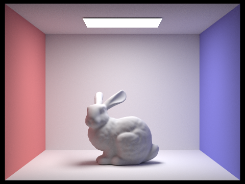
CBbunny: s=1024, l=16, m=5
|
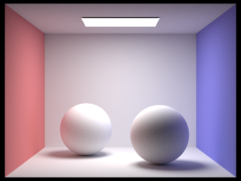
CBspheres: s=1024, l=16, m=5
|
|
dragon: s=1024, l=16, m=5
|
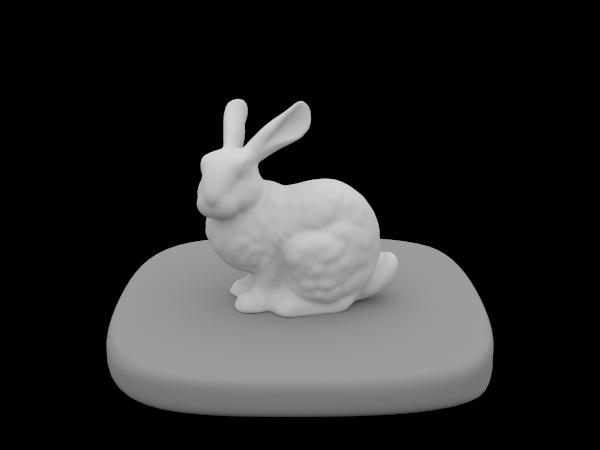
bunny: s=1024, l=16, m=5
|
Pick one scene and compare rendered views first with only direct illumination, then only indirect illumination. Use 1024 samples per pixel.
(You will have to edit PathTracer::at_least_one_bounce_radiance(...) in your code to generate these views.)
|
Only Direct Illumination
|
Only Indirect Illumination
|
|
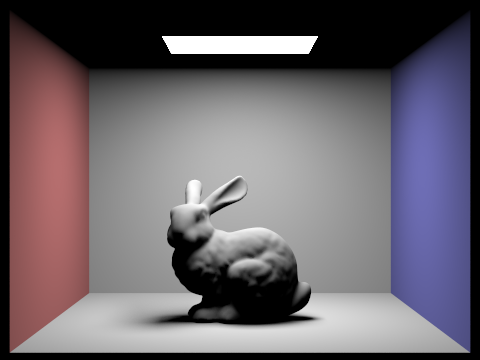
CBbunny: s=1024, l=16
|
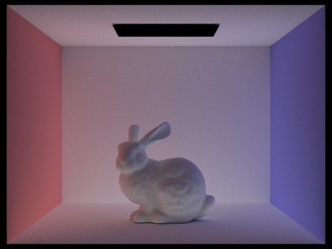
CBbunny: s=1024, l=16
|
|
CBspheres: s=1024, l=16
|
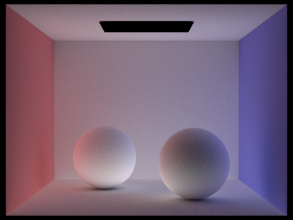
CBspheres: s=1024, l=16
|
|
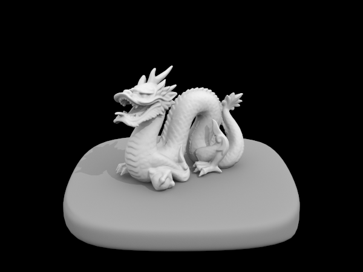
dragon: s=1024, l=16
|
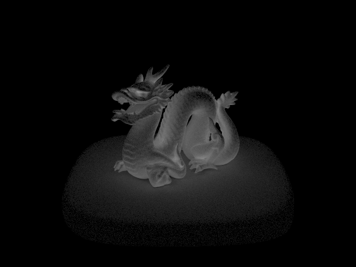
dragon: s=1024, l=16
|
|
bunny: s=1024, l=16
|
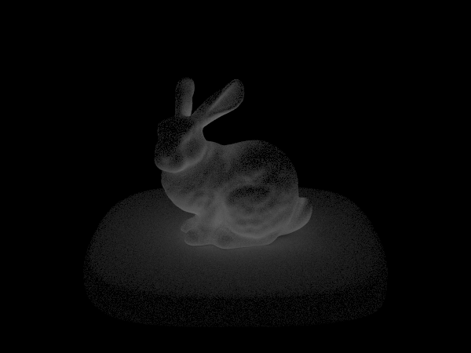
bunny: s=1024, l=16
|
For CBbunny.dae, render the mth bounce of light with max_ray_depth set to 0, 1, 2, 3, 4, and 5 (the -m flag), and isAccumBounces=false.
|
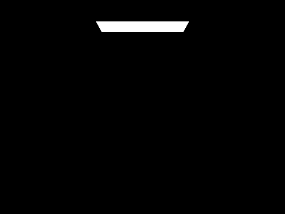
CBbunny: m=0, l=16, isAccumBounces=false
|
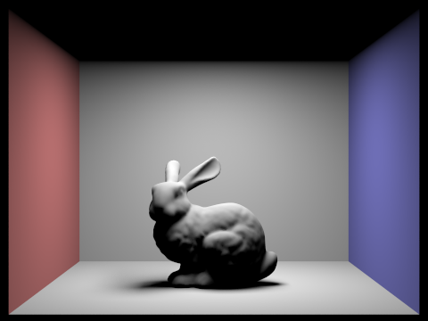
CBbunny: m=1, l=16, isAccumBounces=false
|
|
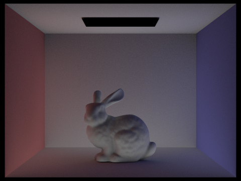
CBbunny: m=2, l=16, isAccumBounces=false
|
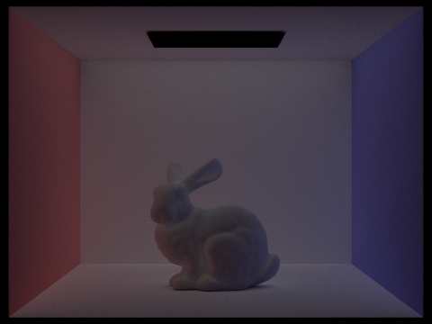
CBbunny: m=3, l=16, isAccumBounces=false
|
|
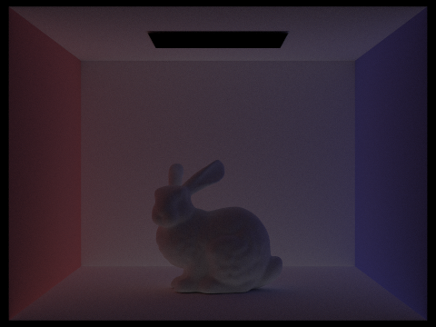
CBbunny: m=4, l=16, isAccumBounces=false
|
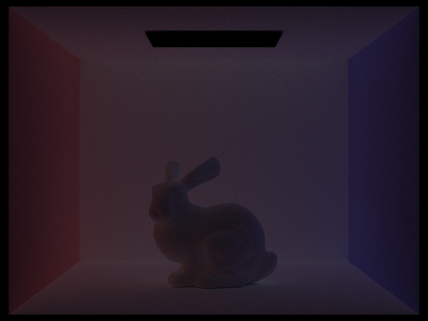
CBbunny: m=5, l=16, isAccumBounces=false
|
The second bounce of light fixes most of the problems from only including direct lighting and improves image quality the most.
It adds softer gray shadows to the scene to counter the harsh black shadows originally on the bottom of the bunny and the ceiling of the box.
One noticeable difference compared to the third bounce is that significantly more light is added to the bottom of the bunny versus the top.
In contrast, the amount of light added on the third bounce, other than being overall dimmer, is relatively even and matte across the bunny.
For CBbunny.dae, compare rendered views with max_ray_depth set to 0, 1, 2, 3, and 5 (the -m flag). Use 1024 samples per pixel.
|
CBbunny: m=0, l=16, isAccumBounces=true
|
CBbunny: m=1, l=16, isAccumBounces=true
|
|
CBbunny: m=2, l=16, isAccumBounces=true
|
CBbunny: m=3, l=16, isAccumBounces=true
|
|
CBbunny: m=4, l=16, isAccumBounces=true
|
CBbunny: m=5, l=16, isAccumBounces=true
|
For CBbunny.dae, output the Russian Roulette rendering with max_ray_depth set to 0, 1, 2, 3, 4, and 100(the -m flag). Use 1024 samples per pixel.
|
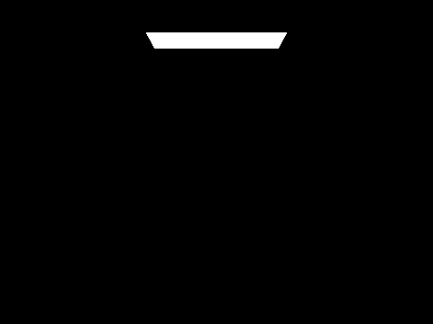
CBbunny: s=1024, m=0, l=16
|
CBbunny: s=1024, m=1, l=16
|
|
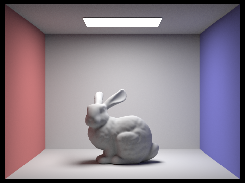
CBbunny: s=1024, m=2, l=16
|
CBbunny: s=1024, m=3, l=16
|
|
CBbunny: s=1024, m=4, l=16
|
CBbunny: s=1024, m=100, l=16
|
Pick one scene and compare rendered views with various sample-per-pixel rates, including at least 1, 2, 4, 8, 16, 64, and 1024. Use 4 light rays.
|
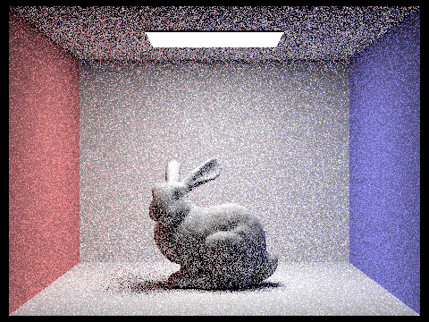
CBbunny: s=1, l=4, m=5
|
CBbunny: s=2, l=4, m=5
|
|
CBbunny: s=4, l=4, m=5
|
CBbunny: s=8, l=4, m=5
|
|
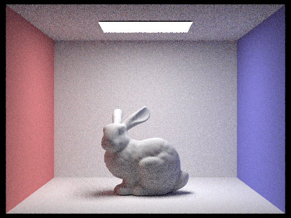
CBbunny: s=16, l=4, m=5
|
 CBbunny: s=64, l=4, m=5
CBbunny: s=64, l=4, m=5
|
|
CBbunny: s=512, l=4, m=5
|
CBbunny: s=1024, l=4, m=5
|
Part 5: Adaptive Sampling (20 Points)
Explain adaptive sampling. Walk through your implementation of the adaptive sampling.
Adaptive sampling is used to improve rendering efficiency and time while maintaining image quality by focusing computational effort where it is most needed and minimizing unnecessary sampling.
It aims to effectively allocate resources by dynamically adjusting the number of samples used for each pixel based on the convergence of estimated light values.
Areas of the scene with complex lighting effects (eg. caustics or glossy reflections) will receive additional samples, while simpler areas (eg. blank walls) receive fewer samples.
The algorithm computes the mean and variance of the estimated illuminance using acculumated illuminance values and their squares over the sampled rays.
It periodically checks for convergence after processing samplesPerBatch samples, calculating the 95% confidence interval for the average illuminance.
It compares it with the specified maxTolerance tolerance and terminates the sampling loop if the confidence interval falls within the allowed tolerance, indicating convergence.
The sampleCountBuffer is also updated to visualize the actual sampling rate per pixel as a ratio to the maximum number of samples allowed.
Pick two scenes and render them with at least 2048 samples per pixel. Show a good sampling rate image with clearly visible differences in sampling rate over various regions and pixels.
Include both your sample rate image, which shows your how your adaptive sampling changes depending on which part of the image you are rendering, and your noise-free rendered result.
Use 1 sample per light and at least 5 for max ray depth.
|
Rendered Result
|
Sample Rate
|
|
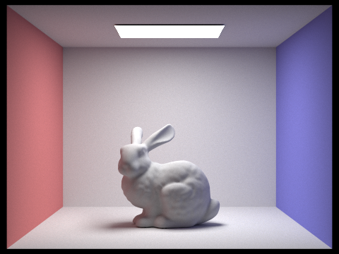
CBbunny: s=2048, l=1, m=5
|
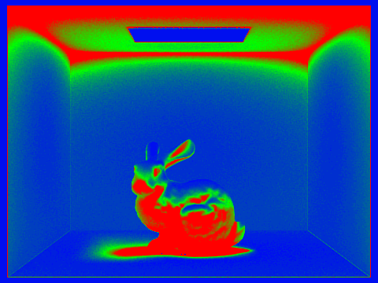
CBbunny rate: s=2048, l=1, m=5
|
|
CBspheres: s=2048, l=1, m=5
|
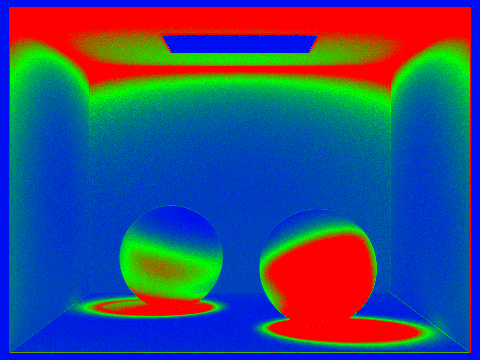
CBspheres rate: s=2048, l=1, m=5
|
|
dragon: s=2048, l=1, m=5
|
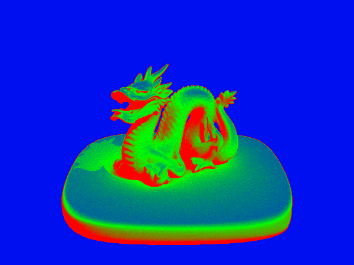
dragon rate: s=2048, l=1, m=5
|
|
bunny: s=2048, l=1, m=5
|
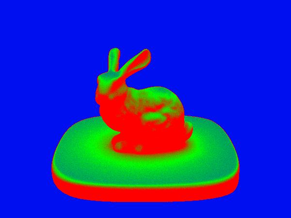
bunny rate: s=2048, l=1, m=5
|
|
CBbunny: s=4096, l=1, m=5
|
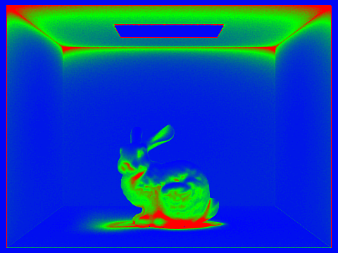
CBbunny rate: s=4096, l=1, m=5
|
|
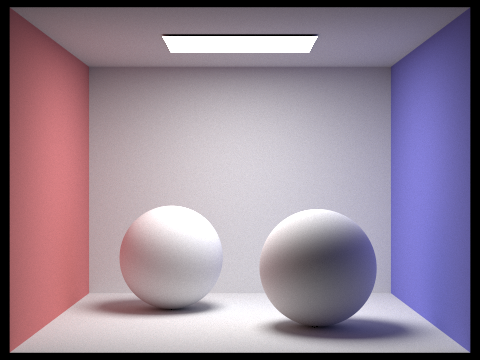
CBspheres: s=4096, l=1, m=5
|
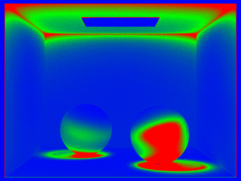
CBspheres rate: s=4096, l=1, m=5
|
|
dragon: s=4096, l=1, m=5
|
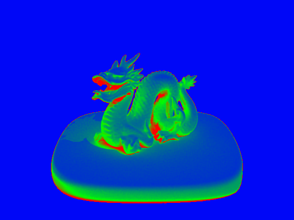
dragon rate: s=4096, l=1, m=5
|
|
bunny: s=4096, l=1, m=5
|
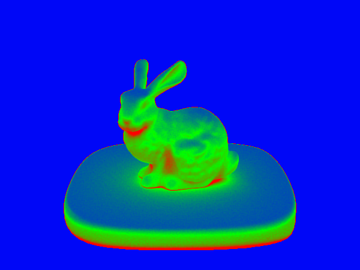
bunny rate: s=4096, l=1, m=5
|